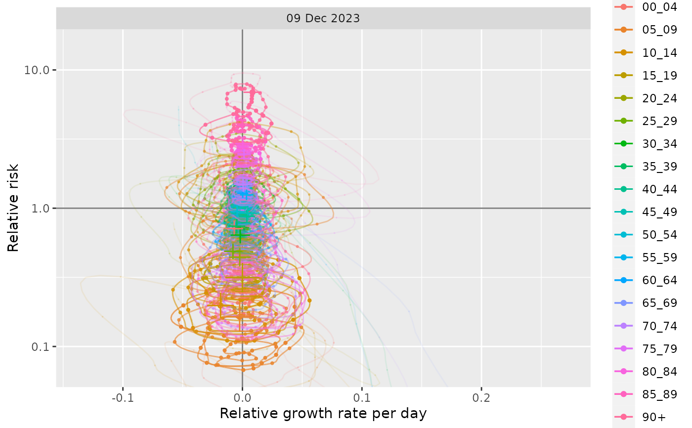

R/normalised-proportion.R
normalise_proportion.RdThis assumes case distribution proportions are stratified by a population grouping, e.g. geography or age, and we have estimates of the size of that population during that time period. Normalising by population proportion allows us to compare groups.
normalise_proportion(
modelled = i_proportion_model,
base = i_baseline_proportion_data,
...
)A dataframe containing the following columns:
time (as.time_period + group_unique) - A (usually complete) set of singular observations per unit time as a time_period
incidence.fit (double) - an estimate of the incidence rate on a log scale
incidence.se.fit (double) - the standard error of the incidence rate estimate on a log scale
incidence.0.025 (positive_double) - lower confidence limit of the incidence rate (true scale)
incidence.0.5 (positive_double) - median estimate of the incidence rate (true scale)
incidence.0.975 (positive_double) - upper confidence limit of the incidence rate (true scale)
No mandatory groupings.
No default value.
Model output from processing the raw dataframe with something like
proportion_locfit_model
A dataframe containing the following columns:
baseline_proportion (proportion) - Size of population
No mandatory groupings.
No default value.
The baseline data must be grouped in the same way as modelled.
not used
a dataframe with incidence rates per unit capita. A dataframe containing the following columns:
time (as.time_period + group_unique) - A (usually complete) set of singular observations per unit time as a time_period
proportion.fit (double) - an estimate of the proportion on a logit scale
proportion.se.fit (double) - the standard error of proportion estimate on a logit scale
proportion.0.025 (proportion) - lower confidence limit of proportion (true scale)
proportion.0.5 (proportion) - median estimate of proportion (true scale)
proportion.0.975 (proportion) - upper confidence limit of proportion (true scale)
risk_ratio.0.025 (positive_double) - lower confidence limit of the excess risk ratio for a population group
risk_ratio.0.5 (positive_double) - median estimate of the excess risk ratio for a population group
risk_ratio.0.975 (positive_double) - upper confidence limit of the excess risk ratio for a population group
baseline_proportion (proportion) - The population baseline risk from which the excess risk ratio is based
No mandatory groupings.
No default value.
tmp = growthrates::england_covid %>%
growthrates::proportion_locfit_model(window=21) %>%
growthrates::normalise_proportion(growthrates::england_demographics) %>%
dplyr::glimpse()
#> Rows: 26,790
#> Columns: 17
#> Groups: class [19]
#> $ class <fct> 00_04, 00_04, 00_04, 00_04, 00_04, 00_04, 00_04…
#> $ time <time_prd> 0, 1, 2, 3, 4, 5, 6, 7, 8, 9, 10, 11, 12, …
#> $ proportion.fit <dbl> -13.433629, -13.178345, -12.898497, -12.600007,…
#> $ proportion.se.fit <dbl> 1.9704812, 1.9806287, 1.9698010, 1.9407645, 1.8…
#> $ proportion.0.025 <dbl> 3.080154e-08, 3.897655e-08, 5.266914e-08, 7.514…
#> $ proportion.0.5 <dbl> 1.465037e-06, 1.891110e-06, 2.501801e-06, 3.371…
#> $ proportion.0.975 <dbl> 6.967797e-05, 9.174702e-05, 1.188229e-04, 1.512…
#> $ relative.growth.fit <dbl> 0.24102860, 0.24048966, 0.23901181, 0.23680352,…
#> $ relative.growth.se.fit <dbl> 0.05652227, 0.05843512, 0.05974646, 0.06053403,…
#> $ relative.growth.0.025 <dbl> 1.302470e-01, 1.259589e-01, 1.219109e-01, 1.181…
#> $ relative.growth.0.5 <dbl> 0.24102860, 0.24048966, 0.23901181, 0.23680352,…
#> $ relative.growth.0.975 <dbl> 0.3518102, 0.3550204, 0.3561127, 0.3554480, 0.3…
#> $ population <dbl> 3077000, 3077000, 3077000, 3077000, 3077000, 30…
#> $ baseline_proportion <dbl> 0.05447011, 0.05447011, 0.05447011, 0.05447011,…
#> $ risk_ratio.0.025 <dbl> 5.654761e-07, 7.155585e-07, 9.669367e-07, 1.379…
#> $ risk_ratio.0.5 <dbl> 2.689616e-05, 3.471831e-05, 4.592981e-05, 6.190…
#> $ risk_ratio.0.975 <dbl> 0.001279196, 0.001684355, 0.002181432, 0.002777…
plot_growth_phase(tmp)
#> Coordinate system already present. Adding new coordinate system, which will
#> replace the existing one.
